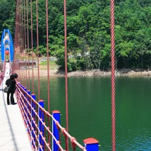
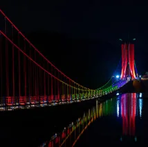
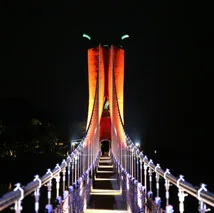
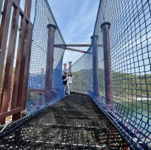
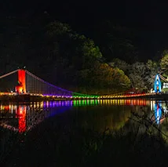
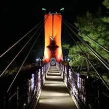

▲ 천장호출렁다리의 구기자 모양 주탑. 다리 반대편에는 청양 고추를 형상화한 붉은 주탑이 마주 서 있다
충남 청양군 정산면, 칠갑산 자락이 동쪽으로 뻗어내린 끝자락에 천장호가 있다. 그 위로 길이 207m, 폭 1.5m의 출렁다리가 놓여 있는데, 2009년 개통 당시부터 지금까지 청양을 대표하는 관광지 자리를 지키고 있다. 다리 양 끝에는 청양의 대표 특산물인 고추와 구기자를 각각 형상화한 두 개의 주탑이 마주 서 있어, 다른 지역 출렁다리와 확실히 구별되는 인상을 남긴다. 2017년에는 한국기록원으로부터 당시 기준 국내 최장 저수지 출렁다리로 인증받기도 했다. 길이부터 조명, 연계 등산로까지 방문 전 알아두면 좋은 정보를 정리했다.
1. 207m 출렁다리, 두 개의 주탑이 마주 보는 구조
▲ 다리 한쪽 끝에 선 붉은 고추 모양 주탑. 입구에는 청양을 상징하는 마스코트 조형물도 놓여 있다 ⓒ 청양군청
천장호출렁다리는 저수지 양쪽 기슭을 207m 길이로 잇는다. 폭은 1.5m로 한 번에 여러 사람이 나란히 걷기보다는 한 줄로 이동하는 구조에 가깝다. 다리에 들어서 20m쯤 지나면 걸음마다 상하좌우로 30~40cm가량 흔들리도록 설계돼 있어, 완만한 진동이 다리를 건너는 내내 이어진다. 다리 양 끝에는 각각 높이 16m의 주탑이 서 있는데, 한쪽은 청양 고추를 형상화한 붉은 탑, 반대쪽은 청양 구기자를 형상화한 푸른 탑으로 디자인이 서로 다르다. 두 주탑이 같은 다리의 양 끝에서 다른 색과 형태로 마주 보는 구성이 이 다리만의 시각적 특징이다.

▲ 다리 위에서 바라본 천장호 전경. 난간 색이 구간마다 달라 걷는 재미를 더한다 ⓒ 청양군청
2. 야간 조명 — 금·토·일요일 밤 9시까지

▲ 야간 조명이 켜진 고추 모양 주탑. 잔잔한 천장호 수면에 그대로 반영돼 비친다 ⓒ 청양군청
천장호출렁다리는 평일에는 오후 6시까지 운영되지만, 금·토·일요일에는 야간개장으로 오후 9시까지 다리 위를 걸을 수 있다. 해가 진 뒤에는 두 주탑에 조명이 들어와 낮과는 전혀 다른 분위기를 연출하는데, 붉은 고추 탑과 푸른 구기자 탑에 각각 다른 색의 조명이 켜지고 그 빛이 잔잔한 호수 수면에 그대로 비친다. 사진 촬영을 목적으로 방문한다면 일몰 직후부터 다리 조명이 완전히 켜지는 시간대를 노리는 편이 좋다.

▲ 구기자 모양 주탑에 켜진 야간 조명. 반대편 고추 탑과 다른 색감으로 대비를 이룬다 ⓒ 청양군청
3. 에코워크와 연계 시설 — 그물 위를 걷는 177m 체험 코스

▲ 천장호 입구에서 황룡정까지 이어지는 에코워크. 그물 소재 통로를 걷는 체험형 코스다 ⓒ 청양군청
출렁다리 하나만으로 아쉽다면 천장호 입구부터 황룡정까지 이어지는 에코워크를 함께 걸어볼 만하다. 네트워크 코스·네트 브릿지 코스·네트 타워 코스·네트 어드벤처브릿지 코스 등 4가지 테마로 구성되며 전체 길이 177m 구간에 23개의 체험요소가 배치돼 있다. 그물 소재로 만들어진 바닥과 다리를 직접 밟고 건너는 구조라, 일반 출렁다리와는 다른 종류의 스릴을 느낄 수 있다.
| 항목 | 내용 |
|---|---|
| 출렁다리 길이·폭 | 207m · 1.5m |
| 주탑 | 고추·구기자 형상화, 각 높이 16m(다리 양 끝) |
| 개통·인증 | 2009년 개통, 2017년 한국기록원 인증 |
| 운영시간 | 평일 ~18:00 / 금·토·일 야간개장 ~21:00 |
| 에코워크 | 4개 테마, 총 177m, 체험요소 23개 |
| 입장료·주차 | 무료 |
| 위치 | 충남 청양군 정산면 천장호길 24 |
| 문의 | 041-940-2723 |
4. 칠갑산 등산로 연계 — 정상까지 3.45km

▲ 다리 전체가 조명으로 물든 파노라마 야경. 잔잔한 수면에 다리와 산 능선이 함께 반영된다 ⓒ 청양군청
천장호는 칠갑산 자락이 동쪽으로 뻗어 내린 끝자락에 자리한다. 출렁다리를 건넌 뒤 칠갑산 정상으로 이어지는 등산로를 따라가면 천장호와 다리, 울창한 숲과 계곡을 함께 감상할 수 있다. 천장호출렁다리에서 칠갑산 정상까지는 3.45km, 약 1시간 30분이 소요되는 것으로 알려져 있다. 칠갑산은 1973년 도립공원으로 지정된 곳으로, 천장호 코스 외에도 장곡사·대치터널·도림사지·까치네유원지·자연휴양림 등을 기점으로 하는 등산로 등 모두 9개의 등산로가 있어, 체력과 일정에 맞춰 코스를 고를 수 있다.

▲ 천장호 인근 호숫가 산책로. 출렁다리·에코워크와 이어 걷기 좋은 코스로 소개된다 ⓒ 청양군청
5. 청양 특산물 — 고추와 구기자
천장호출렁다리의 두 주탑이 상징하듯, 청양은 고추와 구기자로 잘 알려진 지역이다. 매운맛으로 유명한 청양고추의 원산지이자 한방 약재로 쓰이는 구기자의 대표 산지로, 매년 청양 고추·구기자 문화축제가 열려 고추탑 쌓기, 김치 만들기, 구기자 떡 모자이크 같은 체험 프로그램과 생산자 직거래 장터가 함께 운영된다. 2026년 축제에는 11만 명이 넘는 방문객이 다녀갔을 만큼 지역을 대표하는 행사로 자리 잡았다. 천장호를 둘러본 뒤 청양읍내의 특산물 판매장이나 축제 기간 행사장을 함께 들르면 여행 동선을 완성할 수 있다.
✅ 청양 천장호출렁다리, 가기 전 체크리스트
· 다리 길이 207m·폭 1.5m, 2009년 개통, 2017년 한국기록원 인증(당시 국내 최장 저수지 출렁다리)
· 다리 양 끝에 고추·구기자를 형상화한 서로 다른 색의 주탑(각 16m) 배치
· 평일은 오후 6시, 금·토·일요일은 야간개장으로 오후 9시까지 조명 운영
· 에코워크(177m·4테마·23체험요소)와 칠갑산 정상행 등산로(3.45km, 약 1시간30분) 연계
· 입장료·주차 모두 무료
· 청양 특산물인 고추·구기자는 매년 '고추·구기자 문화축제'로 이어짐